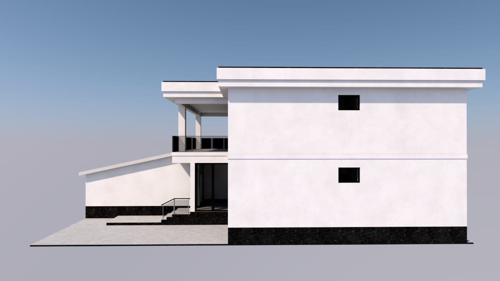
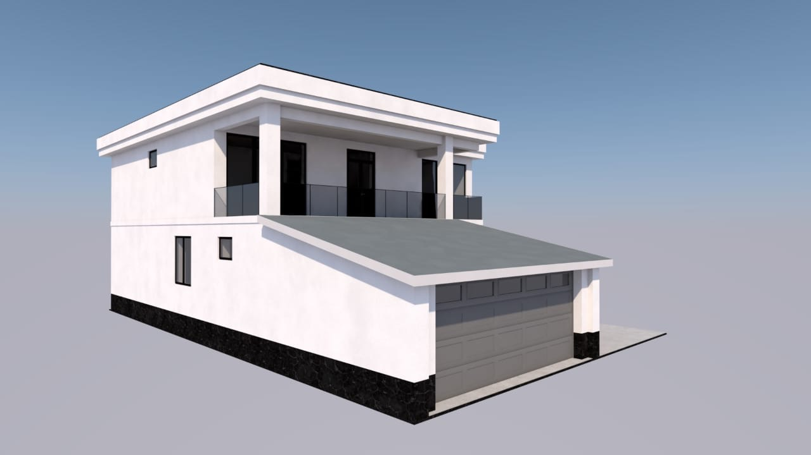
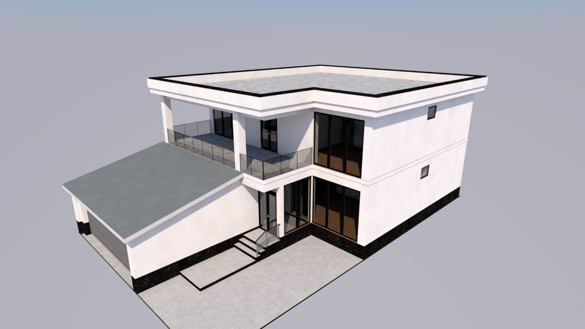
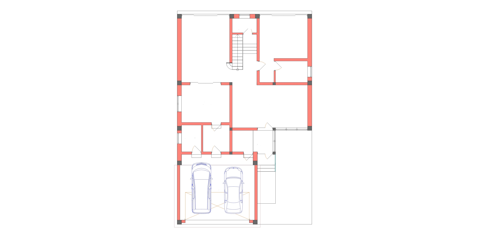
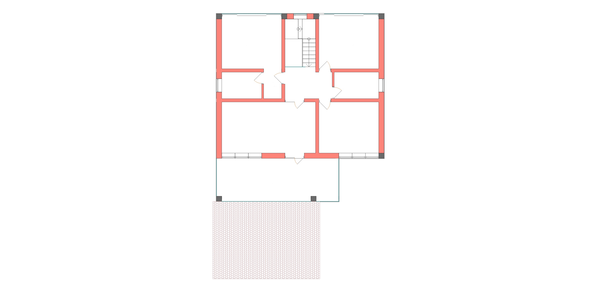
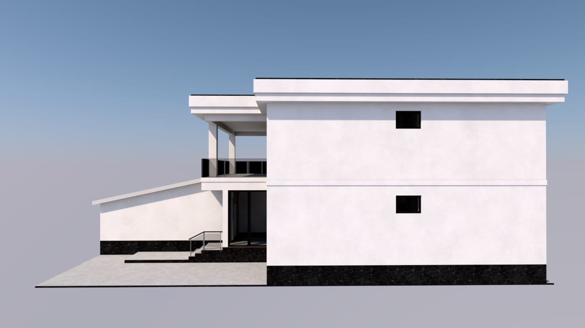
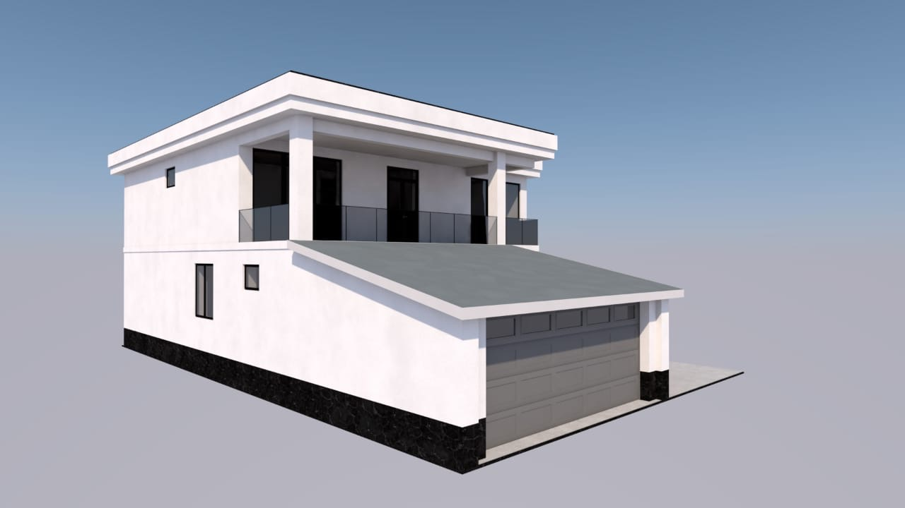
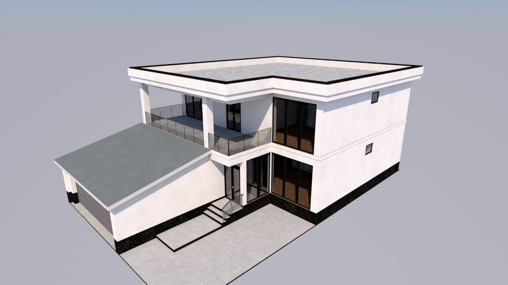
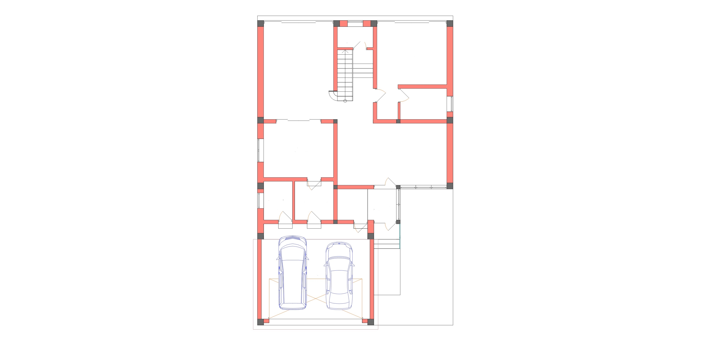
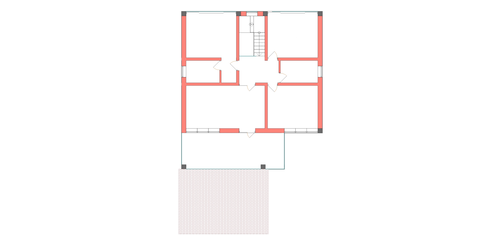

Стильный коттедж в стиле Хай-Тек с гаражом на 2 авто и террасами
Этот дом — идеальный выбор для ценителей современной архитектуры и городского комфорта. Здание отличается строгой геометрией форм, плоской крышей и лаконичным фасадом, где белоснежная штукатурка эффектно сочетается с черными рамами панорамных окон и темным каменным цоколем. Стеклянные ограждения балконов придают конструкции легкость и завершенный вид.
Первый этаж — Комфорт и логистика: Планировка первого уровня разработана с учетом максимального удобства для автовладельцев и хозяйственных нужд:
- Гаражный комплекс: К дому пристроен просторный гараж на два автомобиля. Из него можно попасть в жилую часть через буферную зону, что особенно удобно в плохую погоду.
- Хозяйственный блок: Рядом с гаражом и кухней размещены котельная и отдельная кладовая. Это позволяет сразу разгружать продукты из машины, не пронося их через весь дом.
- Зона кухни и столовой: Кухня выделена в отдельное помещение, но соседствует с просторной светлой столовой, где соберется вся семья.
- Гостевая зона: Центром этажа является большой холл-зал. Также здесь предусмотрена изолированная спальня для гостей и ванная комната.
Второй этаж — Личное пространство: Верхний уровень отведен под отдых и релаксацию:
- Вторая гостиная: Поднявшись по лестнице, вы попадаете в уютный верхний зал, который имеет выход на широкий балкон со стеклянным ограждением — идеальное место для вечернего отдыха.
- Спальни: Здесь расположены две просторные спальни. Благодаря удачной планировке, они изолированы друг от друга, обеспечивая тишину.
- Удобства: На этаже спроектированы две ванные комнаты, что повышает уровень комфорта для жильцов.
Почему этот проект актуален:
- Встроенный гараж: Редкая и ценная опция для современных проектов, обеспечивающая теплое хранение автомобилей.
- Разумная логистика: Путь "Гараж -> Кладовая -> Кухня" максимально продуман.
- Современный дизайн: Панорамное остекление и плоская кровля выделяют дом на фоне классической застройки.
- Функциональность: Наличие спальни на первом этаже и двух гостиных зон (внизу и наверху).